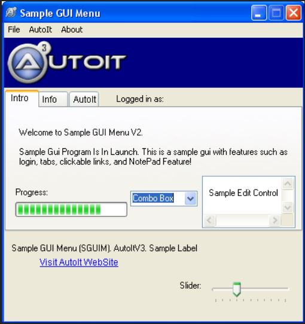

I talked with Mr. Kotalik this weekend to discuss the graphical user interface, or GUI, I’ll be using for people to interact with my program. He first showed me many examples of online web applications to demonstrate how companies design their apps to be easy-to-use. In essence, the lesson was to place the part of the app that will be used the most in clear view. The more advanced options should be hidden in menus so as not to overwhelm users. Additionally, he suggested I use the same standard icons as most companies use (such as the gear for settings). He told me this because in his experience, products that try to go against the tide in that way are confusing and do not catch on as well. Here is an example of a GUI:

The way I envision the home screen for my program is to have a left menu, middle pane that contains the webcam footage, and a right pane that has the controls for operating the camera. The right pane will allow the ability to switch between an Interview and Detection mode. The Interview mode has text boxes to allow the inputting of patients’ names and will have the option to record and capture frames in a certain section, then mark it as a certain emotion. The Detection mode will simply have a Detect button that will allow the program to first compare the face to faces already in the system, and if the accuracy passes a certain threshold, perform emotion detection on it and store this data. Other screens will take up both middle and right panes.
Left Menu:
Has options for Home (screen with camera), Patient Data (allows access to each patient’s individual file), Dashboard (contains an overall analysis of all patients in the database), Help (which will provide a basic overview of how to use the program). and About (which will contain information about who created the software).
Patient Data:
Allows the user to select a patient name from a drop down list and view their emotion data, along with the data the data comes from. It also allows the user to edit this data.
Dashboard:
Shows some graphics that demonstrate how all the patients are feeling (such as a pie chart). It also allows the user to mark certain days with events, such as a music event. In the future, if the same event comes up and is inputted, the program will be able to pull up previous data for the user to decide whether there is a trend in how patients react to these events, e.g. They are happier when music is played.
Help:
Contains instructions on how to operate the program and a link to the support website.
About:
Has a company logo and short text describing the program.
I believe this layout will allow easy use of this program for people without technical backgrounds. I intend to use TKinter, Python’s standard GUI kit, to create a prototype of this program. If TKinter proves too difficult or not efficient enough, I am considering using Java for the GUI (as Java has a great built-in graphics library) and integrating the two with Jython.